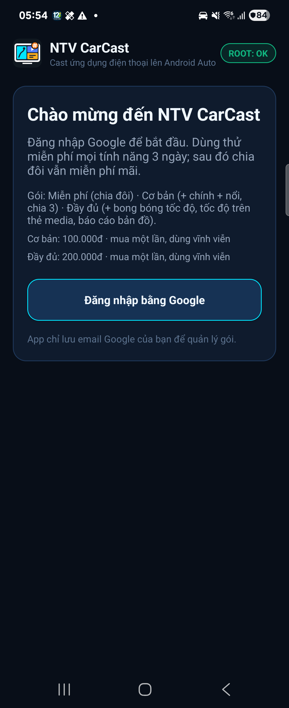
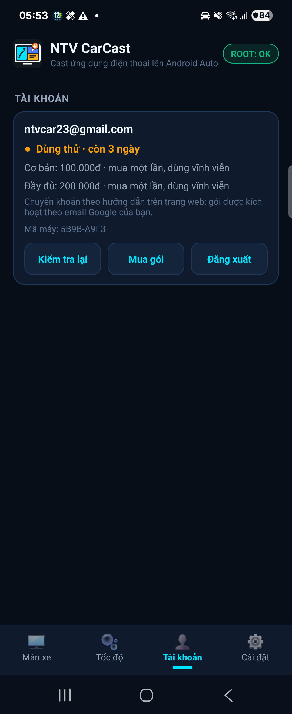

Cài đặt
0. Chuẩn bị
| Cần có | Ghi chú |
|---|---|
| Điện thoại đã root bằng Magisk (hoặc KernelSU / APatch) | Hướng dẫn dưới đây viết cho Magisk |
| LSPosed (bản Zygisk) đã cài trong Magisk | Kiểm tra: kéo thanh thông báo thấy "LSPosed" |
Android Auto (com.google.android.projection.gearhead) | Cài từ Google Play, nên cập nhật bản mới |
| Tài khoản Google trên điện thoại + mạng lúc đăng nhập | Bắt buộc để dùng app (bước 4) |
| Waze Mod V14+ (không bắt buộc) | Chỉ cần cho bong bóng tốc độ, thẻ media, báo cáo; Waze Mod bản "Đã gỡ AA" cũng được |
File NTV-CarCast-v1.5.0.apk | Tải tại trang chủ NTV CarCast |
1. Cài APK
Android Auto chỉ hiện những app mà nó coi là cài từ Google Play. Chọn một trong hai cách:
Cách A — qua máy tính (adb), khuyên dùng:
adb install -i com.android.vending NTV-CarCast-v1.5.0.apk-i com.android.vending đánh dấu nguồn cài đặt là Play Store.
Cách B — trên điện thoại: cài bằng KingInstaller và chọn chế độ cài "như Google Play".
Nếu đã từng cài bản debug (hoặc bản ký bằng khoá khác), phải gỡ bản cũ trước:
adb uninstall com.ntv.carcast. Gỡ sẽ xoá cài đặt trong app, quyền root trong Magisk và bật module trong LSPosed: làm lại bước 2, 3 và khởi động lại điện thoại. Cập nhật bình thường thì cài đè, không gỡ.
2. Bật module trong LSPosed
- Mở LSPosed (biểu tượng trên màn hình chính, hoặc chạm thông báo "LSPosed" trên thanh thông báo).
- Vào tab Modules → chạm NTV CarCast.
- Bật công tắc Enable module.
- Tích cả hai scope:
- System Framework (
android): giữ hình và cho phép chạm khi màn hình điện thoại tắt. - Android Auto (
com.google.android.projection.gearhead): cho phép NTV CarCast hiện trong Android Auto, và bỏ bảng bên phải khi bật Toàn màn hình.
- System Framework (
- Khởi động lại điện thoại. Bước này bắt buộc, vì scope System Framework chỉ có hiệu lực sau khi khởi động lại.
Mỗi lần cập nhật NTV CarCast, mở lại LSPosed kiểm tra 2 scope vẫn được tích, rồi khởi động lại máy.
3. Cấp quyền root trong Magisk
- Mở NTV CarCast trên điện thoại.
- Magisk hiện hộp thoại "NTV CarCast yêu cầu quyền Superuser" → chọn Grant / Cho phép, thời hạn Forever / Vĩnh viễn.
- Góc trên app hiện chip ROOT: OK là thành công. Nếu thấy ROOT: CHƯA CẤP:
- Vào Magisk → tab Superuser (biểu tượng khiên) → bật công tắc cạnh NTV CarCast.
- Kiểm tra Magisk → Settings → Superuser Access đang là "Apps only" hoặc "Apps and ADB" (không phải "Disabled").
- Quay lại NTV CarCast, chạm chip ROOT để kiểm tra lại.
Khi đã có root, app tự cấp thêm cho chính nó: quyền thông báo và miễn tối ưu pin (để giữ app trên xe khi bạn chuyển sang màn hình Android Auto khác).
4. Đăng nhập Google và chọn gói
- Mở NTV CarCast trên điện thoại → màn chào → Đăng nhập bằng Google → chọn tài khoản. Chưa đăng nhập thì màn hình xe chỉ hiện "Mở NTV CarCast trên điện thoại để đăng nhập".
- Tài khoản mới được dùng thử gói Đầy đủ (hiện là 3 ngày; số ngày do máy chủ đặt, có thể đổi). Hết thử thì về gói Miễn phí, dùng mãi không hết hạn.
- Thẻ Tài khoản: email, gói và hạn (vd. "Dùng thử · còn 3 ngày"), mã máy, giá, nút Kiểm tra lại, Mua gói, Liên hệ, Đăng xuất.


| Gói | Có gì | Giá |
|---|---|---|
| Miễn phí | Chia đôi, Toàn màn hình, tự mở khi kết nối, chỉnh DPI, zoom một vùng, tắt màn hình điện thoại | 0đ |
| Cơ bản | Miễn phí + 1 chính + 1 nổi + chia 3 | Mua một lần, dùng vĩnh viễn |
| Đầy đủ | Cơ bản + bong bóng tốc độ, tốc độ trên thẻ media, báo cáo lỗi bản đồ | Mua một lần, dùng vĩnh viễn |
Giá hiện tại xem ở bảng giá trên trang chủ (app cũng hiện giá trong thẻ Tài khoản).
Cách mua:
- Bấm Mua gói trong thẻ Tài khoản (mở bảng giá).
- Chuyển khoản theo số tài khoản trên trang, nội dung chuyển khoản ghi email Google đã đăng nhập trong app.
- Chủ app kích hoạt gói theo email đó (làm tay). Xong thì bấm Kiểm tra lại (hoặc chờ lần nối xe sau): gói tự mở, không cần cài lại.
Cần biết:
- Trên màn hình xe không có thanh toán: mục chưa có trong gói chỉ hiện 🔒, chạm vào thì xe nhắc nâng cấp trên điện thoại.
- Mỗi tài khoản dùng trên 1 máy. Đổi máy: bấm Liên hệ để gỡ máy cũ, rồi Kiểm tra lại trên máy mới. Mỗi máy chỉ dùng thử bằng một tài khoản.
- Lái xe không cần mạng: gói dùng không mạng tới 14 ngày, app tự gia hạn mỗi khi có mạng.
- Gói hết hạn giữa đường thì vẫn giữ tới hết lần lái đó.
- App chỉ lưu email Google để quản lý gói (điều khoản). Mua gói là mua quyền sử dụng tính năng, không phải donate.
5. Chọn ứng dụng và dùng trên xe
- Trong NTV CarCast trên điện thoại (thẻ Màn xe): chọn bố cục, rồi chạm vào từng ô để chọn ứng dụng (vd. Google Maps). Ô viền vàng là ô còn thiếu ứng dụng.
- Cắm điện thoại vào xe → trên màn hình Android Auto mở NTV CarCast.
- Nút ⚙ trên xe (ở chia đôi / chia 3: chạm nút ⚙ tròn ở giữa): chọn bố cục, đổi / mở lại / zoom từng app, đổi chỗ 2 app, chỉnh DPI, tắt màn hình điện thoại. Tìm kiếm thì dùng ngay trong app: 🎤 của Google Maps, ô tìm kiếm / bàn phím của trình duyệt…
- Có thể bấm phím nguồn tắt màn hình điện thoại; app trên xe vẫn chạy.
6. Bong bóng tốc độ (Waze Mod, gói Đầy đủ)
- App điện thoại → thẻ Tốc độ → Bong bóng tốc độ → chọn Dọc hoặc Ngang (hoặc trong menu ⚙ trên xe).
- Mục Nguồn dữ liệu (một lần):
- Waze Mod: bấm Kết nối → chọn Cho phép trong Waze Mod. Máy cài 2 bản Waze Mod thì app hỏi chọn bản.
- Bấm Dùng. Dòng trạng thái: xanh = đang nhận dữ liệu; cam = đã kết nối nhưng app nguồn chưa mở.
- Khi lái: mở Waze Mod (chạy nền được), mở NTV CarCast trên xe. Kéo bong bóng tới chỗ muốn đặt, chạm để đổi Đầy đủ / Gọn. Cỡ và độ đậm nền chỉnh trong Tuỳ chỉnh bong bóng.
- Thẻ media cạnh bản đồ (tuỳ chọn Tốc độ trên thẻ media, mặc định bật): trên xe mở CarCast Tốc độ một lần (lưới ứng dụng). Thẻ "đang phát" cạnh Google Maps / Waze sẽ hiện tốc độ; nếu app nhạc khác dùng gần hơn thì thẻ CarCast nằm ở trang sau (chạm dấu chấm trên thẻ để chuyển).
- Báo cáo lỗi bản đồ: mục Báo cáo bản đồ → Cho phép vị trí (chỉ khi đang dùng). Trên xe chạm thẻ Báo cáo trên bong bóng hoặc menu ⚙ → Báo cáo lỗi bản đồ; trên thẻ media có nút 📍 Đánh dấu. Để yên 10 giây thì tự lưu "Đánh dấu nhanh". Trên điện thoại: Xem & xuất để sửa, mở Waze Map Editor, xuất CSV / GeoJSON.
7. Tuỳ chọn hay dùng (app điện thoại → thẻ Cài đặt)
- Tự mở NTV CarCast khi kết nối Android Auto: cắm cáp là app tự lên màn hình xe sau vài giây.
- Toàn màn hình: bỏ bảng bên phải của Android Auto trên màn hình dài, app chiếm hết chiều ngang.
- Hai tuỳ chọn này có hiệu lực từ lần kết nối sau, hoặc bấm Khởi động lại Android Auto ngay bên dưới.
- Kiểm tra cập nhật khi mở app: có bản mới thì báo trên điện thoại và màn hình xe.
Cập nhật lên bản mới
Khi app báo có bản mới (hoặc vào trang chủ):
- Tải file
NTV-CarCast-vX.Y.Z.apktrên trang chủ. - Cài đè, không gỡ bản cũ (cùng chữ ký nên giữ nguyên cài đặt, đăng nhập, quyền root và LSPosed):
adb install -r -i com.android.vending NTV-CarCast-vX.Y.Z.apk, hoặc cài lại bằng KingInstaller như bước 1. - Mở LSPosed kiểm tra 2 scope vẫn được tích, rồi khởi động lại điện thoại.
Đừng gỡ app rồi cài lại. Gỡ là mất quyền root trong Magisk và module trong LSPosed (LSPosed báo "Mô-đun Xposed chưa được kích hoạt"). Lỡ gỡ rồi: mở app → Cho phép Superuser trong Magisk (Vĩnh viễn) → LSPosed bật lại module NTV CarCast, tích System Framework + Android Auto → khởi động lại điện thoại → đăng nhập lại (gói vẫn theo tài khoản).
Xử lý sự cố
| Hiện tượng | Cách xử lý |
|---|---|
| Màn hình xe: "Mở NTV CarCast trên điện thoại để đăng nhập" | Mở app trên điện thoại → Đăng nhập bằng Google (cần mạng). Đăng xuất trên điện thoại cũng làm xe về màn này |
| Mục có 🔒 trên xe / điện thoại | Mục đó cần gói Cơ bản hoặc Đầy đủ. Mua theo bảng giá, rồi bấm Kiểm tra lại trong thẻ Tài khoản |
| Đã chuyển khoản mà vẫn 🔒 | Kiểm tra nội dung chuyển khoản đúng email Google đang đăng nhập; chờ chủ app kích hoạt rồi bấm Kiểm tra lại. Lâu chưa mở thì bấm Liên hệ |
| "Tài khoản đang dùng trên máy khác" | Mỗi tài khoản 1 máy. Bấm Liên hệ để gỡ máy cũ, rồi Kiểm tra lại |
| "Máy này đã dùng thử bằng tài khoản khác" | Mỗi máy chỉ dùng thử một lần; tài khoản này dùng gói Miễn phí hoặc mua gói |
| "Hết hạn dùng không mạng" / "chưa gia hạn được: mất mạng" | Quá 14 ngày không có mạng (hoặc đang mất mạng). Mở mạng rồi bấm Kiểm tra lại |
| "Giờ điện thoại bị lùi" | Bật giờ tự động (Cài đặt → Ngày & giờ), rồi bấm Kiểm tra lại |
| Gỡ app rồi cài lại: "ROOT: CHƯA CẤP", LSPosed báo "Mô-đun Xposed chưa được kích hoạt" | Gỡ app làm mất quyền root và module. Cấp lại root trong Magisk (bước 3), bật lại module + 2 scope trong LSPosed (bước 2), khởi động lại điện thoại, đăng nhập lại. Lần sau cập nhật thì cài đè, không gỡ |
| Không thấy NTV CarCast trong Android Auto | Cài lại bằng adb install -i com.android.vending …; kiểm tra scope Android Auto trong LSPosed; khởi động lại Android Auto |
| Màn hình xe báo "Cần quyền root" | Cấp root cho NTV CarCast trong Magisk → Superuser (xem bước 3) |
| Tắt màn hình điện thoại thì hình đứng / không chạm được | Scope System Framework chưa bật, hoặc chưa khởi động lại máy sau khi bật/cập nhật |
| Chia 3: ô phải-dưới đứng hình khi tắt màn hình điện thoại | Khởi động lại máy sau khi cập nhật (hook hệ thống cần nhận ô thứ 3) |
| Bật Toàn màn hình mà bảng bên phải vẫn hiện | Bấm Khởi động lại Android Auto (tuỳ chọn chỉ áp dụng khi Android Auto bắt đầu phiên); kiểm tra scope Android Auto trong LSPosed. Màn hình hẹp (không có bảng bên phải) thì tuỳ chọn không có tác dụng. Log [NTVC Session] ... not found / not recognized = bản Android Auto này đổi layout |
| Bật Tự mở mà app không tự lên | Giống dòng trên: khởi động lại Android Auto, kiểm tra scope Android Auto. Log [NTVC Session] auto-launch requested mà app vẫn không mở = bản Android Auto này đổi cách mở app |
| Zoom 2 ngón không ăn | Màn hình xe chỉ có 1 điểm chạm; dùng nút +/− của app |
| Quay lại thì app trên xe bị mở lại từ đầu | Kiểm tra có thông báo "NTV CarCast đang giữ ứng dụng trên xe"; nếu không có, mở app trên điện thoại để cấp lại root |
| Màn hình đen với một số app | App dùng bảo vệ nội dung (DRM / chặn chụp màn hình); đây là giới hạn của chính app đó |
| YouTube | App YouTube chính thức không phát trên màn hình ảo. Dùng NewPipe, hoặc xem trong trình duyệt không bật fullscreen (Brave/Chrome bị lệch video khi fullscreen, đây là lỗi của Chromium) |
| Máy nóng | Tắt màn hình điện thoại khi cast; thu gọn ứng dụng nổi; giữ tuỳ chọn "Giới hạn 30 fps"; xem tốc độ / camera bằng bong bóng thay vì cast bản đồ Waze lên một ô; tránh chia 3 |
| Bong bóng xám "Waze Mod chưa chạy" | Mở Waze trên điện thoại (chạy nền được). Bong bóng tự sáng lại khi có dữ liệu |
| Bong bóng "Chưa kết nối Waze Mod" | App điện thoại → thẻ Tốc độ → Nguồn dữ liệu → Waze Mod → Kết nối. Chưa cài Waze Mod V14+ thì cài trước |
Gặp lỗi khác: trên xe menu ⚙ → 🐞 Báo lỗi (hoặc điện thoại: thẻ Cài đặt → 🐞 Báo lỗi app), app gửi kèm nhật ký đã che thông tin riêng. Có máy tính thì lấy thêm log:
adb logcat -v time -s NTVCarCast LSPosed-Bridge AndroidRuntime
adb shell dumpsys display | grep -A3 "NTVCarCast"